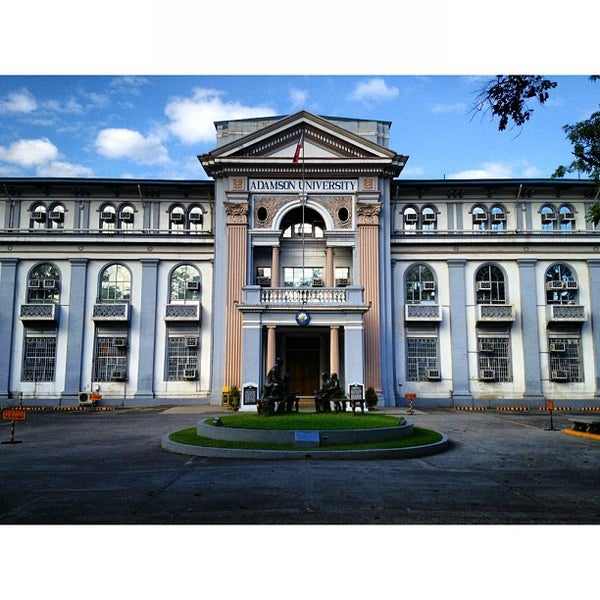

Education

I started my first year as a highschool freshman at a catholic university called Adamson University. At first I was just a teenager, casually wondering on what I should do everyday,
I didn't pay attention to some of my boring classes, and looking back at it I should have focused myself into studying than playing games all day and waiting for my time to get out of class.
I'ts a good thing that even if I was a lazy I could manage to pass my subjects. I enjoyed my time of being a highschool student in Adamson Univeristy, and I'm still hoping that I could also enjoy my college years here as well.